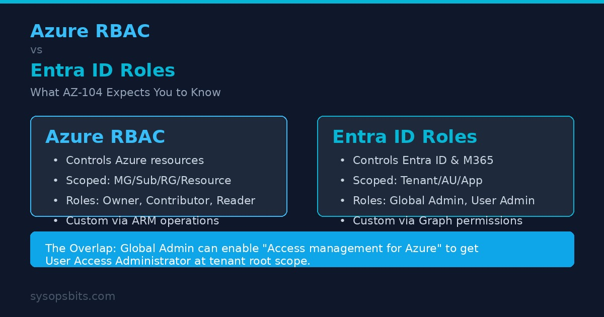

Azure RBAC vs Entra ID Roles: What AZ-104 Expects You to Know

If you are studying for the AZ-104 exam or managing Azure day-to-day, the difference between Azure RBAC and Entra ID roles is one of the most confusing concepts to nail down. Both control access. Both use roles. They share a portal and some terminology. But they are completely separate authorization systems.
This guide breaks down exactly what each system controls, where they overlap, and what AZ-104 expects you to know.
What Each System Controls
Azure RBAC (Role-Based Access Control) governs access to Azure resources through Azure Resource Manager. That includes VMs, storage accounts, virtual networks, subscriptions, and resource groups. It is the authorization system that answers: "Who can create, read, update, or delete this Azure resource?"
Entra ID roles (formerly Azure AD roles) govern access to Microsoft Entra ID itself and some Microsoft 365 services. These roles control who can manage users, groups, applications, conditional access policies, and security settings inside the Entra ID tenant. They answer: "Who can modify this user account or this application registration?"
Both systems use different underlying APIs. Azure RBAC operates through Azure Resource Manager. Entra ID roles operate through Microsoft Graph. A role assignment in one system has no effect in the other.
Scope Hierarchy
The scope at which you assign a role fundamentally affects its impact. The two systems use different scope models.
Azure RBAC Scopes
Azure RBAC supports four scope levels. Assignments flow downward through the hierarchy unless overridden.
- Management Group - A container for subscriptions. Role assignments here apply to all subscriptions within the management group.
- Subscription - The most common scope for broad assignments. Applies to all resource groups and resources in the subscription.
- Resource Group - Applies only to resources within that group.
- Resource - The most granular scope. Applies to a single resource like a specific VM or storage account.
Entra ID Scopes
Entra ID roles use a different scope model with three options:
- Tenant-wide (Org-wide) - The default scope. Applies to all users, groups, apps, and settings in the tenant. Roles like Global Administrator use this scope.
- Administrative Unit - A subset of users, groups, and devices. You create administrative units (AUs) to delegate management of specific departments or regions without granting tenant-wide permissions.
- Application (for app management roles) - Some roles can be scoped to a single application registration or enterprise application.
Fundamental Azure RBAC Roles
AZ-104 tests on these four built-in roles heavily. You must know what each can do.
| Role | Full Access | Create Resources | Read Only | Manage Access |
|---|---|---|---|---|
| Owner | Yes | Yes | Yes | Yes |
| Contributor | Yes | Yes | Yes | No |
| Reader | No | No | Yes | No |
| User Access Administrator | No | No | No | Yes |
Owner and User Access Administrator can grant access to others, which is why they are considered privileged roles. AZ-104 questions frequently test the distinction between Contributor and Owner - the single difference is the ability to manage role assignments.
Key Entra ID Roles
Entra ID has 60+ built-in roles. AZ-104 focuses on these:
- Global Administrator - Full access to all Entra ID features and Microsoft 365 services (Exchange Online, SharePoint Online, Microsoft Entra). Can also elevate to Azure RBAC access.
- User Administrator - Can create and manage users and groups, reset passwords, and manage support tickets. Cannot modify conditional access or app registrations.
- Billing Administrator - Can make purchases, manage subscriptions, and view billing. No user management or security access.
The Overlap: Where They Meet
By default, Azure RBAC and Entra ID roles operate completely independently. There is exactly one bridge: the Global Administrator can enable the "Access management for Azure resources" toggle in the Azure portal. This assigns them the Azure RBAC User Access Administrator role at the tenant root scope, giving them access to all subscriptions in the tenant.
This is often used to recover a tenant when all other administrators have been locked out. Once you enable this toggle, you can assign other Azure RBAC roles at the top-level management group or individual subscription.
AZ-104 exam questions test this scenario regularly. Expect a question where someone is a Global Administrator but cannot see VMs in a subscription - the answer is always that Entra ID roles do not grant Azure resource access by default.
Classic Subscription Administrator Retirement
Before Azure RBAC existed, Azure used three classic administrator roles: Account Administrator, Service Administrator, and Co-Administrator. These roles have been deprecated.
- Account Administrator - The billing owner. Has full access to all subscriptions in the account. Retired August 2024.
- Service Administrator - Has Contributor-level access to the subscription. Equivalent to Owner but without role management.
- Co-Administrator - Same as Service Administrator but assigned per-subscription.
As of May 2026, all classic administrator roles are fully retired. You must use Azure RBAC roles instead. If you have legacy processes depending on these roles, migrate them to Owner or Contributor role assignments immediately.
Custom Roles
Both systems support custom roles for when built-in roles do not provide the right level of access.
Azure RBAC Custom Roles
Azure RBAC custom roles are JSON-defined collections of Resource Provider operations. Each operation takes the form Microsoft.Compute/virtualMachines/read or uses wildcards like Microsoft.Compute/*/read. You can assign a custom role at any scope.
The tenant limit is 5,000 custom roles. Each role can include assignableScopes to restrict where it is available.
# Create a custom Azure RBAC role that allows starting and stopping VMs only
$customRole = @"
{
"Name": "VM Operator (Start/Stop)",
"Description": "Can start and stop virtual machines",
"Actions": [
"Microsoft.Compute/virtualMachines/start/action",
"Microsoft.Compute/virtualMachines/deallocate/action",
"Microsoft.Compute/virtualMachines/read",
"Microsoft.Compute/virtualMachines/instanceView/read"
],
"NotActions": [],
"AssignableScopes": ["/subscriptions/00000000-0000-0000-0000-000000000000"]
}
"@
$customRole | Out-File vmOperatorRole.json
New-AzRoleDefinition -InputFile vmOperatorRole.json
# Assign the custom role at resource group scope
New-AzRoleAssignment `
-SignInName user@contoso.com `
-RoleDefinitionName "VM Operator (Start/Stop)" `
-ResourceGroupName prodVMsEntra ID Custom Roles
Entra ID custom roles are defined using a JSON template with permissions scoped to Microsoft Graph directory permissions. They can be assigned at tenant scope, administrative unit scope, or application scope.
# Create a custom Entra ID role
$customEntraRole = @"
{
"displayName": "Helpdesk (Limited Password Reset)",
"description": "Can reset passwords for users in assigned AU only",
"permissions": [
"microsoft.directory/users/password/update"
],
"allowedPrincipalTypes": ["User"],
"version": 1
}
"@
$customEntraRole | Out-File helpdeskRole.json
# Apply requires Microsoft Graph PowerShell
Connect-MgGraph -Scopes "RoleManagement.ReadWrite.Directory"
New-MgRoleManagementDirectoryRoleDefinition `
-DisplayName "Helpdesk (Limited Password Reset)" `
-Description "Can reset passwords for users in assigned AU only" `
-RolePermissions @(@{AllowedResourceActions=@("microsoft.directory/users/password/update")})Privileged Identity Management (PIM)
Both Azure RBAC and Entra ID roles integrate with Microsoft Entra Privileged Identity Management (PIM). PIM provides just-in-time activation of privileged roles, requiring approval and multi-factor authentication before a user gains elevated permissions.
For Azure RBAC roles, PIM supports time-bound assignments to roles like Owner or Contributor at subscription or resource group scope. For Entra ID roles, PIM supports the same for Global Administrator, User Administrator, and other directory roles.
AZ-104 expects you to know that PIM can be used for both role types, and that it supports both permanent assignments and eligible (time-bound) assignments.
Attribute-Based Access Control (ABAC)
ABAC extends Azure RBAC by adding conditions to role assignments. Instead of granting blanket access, you can restrict access based on resource or request attributes such as tags, IP address ranges, or the caller's principal type.
For example, you can grant Contributor access but only for resources tagged Environment=Development, or grant read access only from a specific IP range.
# Assign Contributor role with ABAC condition (tag-based)
$condition = @"
(
(
!(ActionMatches{'Microsoft.Resources/tags/write'})
)
OR
(
@Request[Microsoft.Resources/tags/subscriptions/security/status] eq 'Development'
)
)
"@
New-AzRoleAssignment `
-SignInName user@contoso.com `
-RoleDefinitionName Contributor `
-ResourceGroupName myRG `
-Condition $condition `
-ConditionVersion "2.0"Practical PowerShell and CLI Commands
You will need these for both the AZ-104 exam and real administration.
Azure RBAC
# List all role assignments for a user (Az PowerShell)
Get-AzRoleAssignment -SignInName user@contoso.com
# List all role definitions
Get-AzRoleDefinition | Select Name, IsCustom
# Assign Reader role at subscription scope (Azure CLI)
az role assignment create \
--assignee user@contoso.com \
--role Reader \
--scope /subscriptions/00000000-0000-0000-0000-000000000000
# Check effective permissions (Azure CLI)
az role assignment list \
--assignee user@contoso.com \
--all \
--output table
# Remove a role assignment
Remove-AzRoleAssignment \
-SignInName user@contoso.com \
-RoleDefinitionName Reader \
-ResourceGroupName myRGEntra ID Roles
# List all Entra ID role assignments (Microsoft Graph)
Connect-MgGraph -Scopes "RoleManagement.Read.All"
Get-MgRoleManagementDirectoryRoleAssignment | `
Format-Table -AutoSize
# Assign a role to a user
$roleId = "f2ef992c-3afb-46b9-b7cf-a126efb6a4b2" # User Administrator
$userId = "user@contoso.com"
New-MgRoleManagementDirectoryRoleAssignment `
-PrincipalId $userId `
-RoleDefinitionId $roleId `
-DirectoryScopeId "/"
# Get your own directory role memberships
az rest --method GET \
--uri "https://graph.microsoft.com/v1.0/me/memberOf"How AZ-104 Tests This
Domain 1 (Identity) of the AZ-104 exam covers Azure RBAC and Entra ID roles through scenario-based questions. Expect these question types:
- "A user is a Global Administrator but cannot see VMs in a subscription. What is the issue?" - Entra ID roles do not grant Azure RBAC access.
- "A user needs to create VMs but not manage access for others. Which role?" - Contributor.
- "You need to delegate user management for the Sales department only. What should you use?" - An administrative unit with the User Administrator role scoped to it.
- "You need to grant someone access to all resources in multiple subscriptions. What scope?" - Management group.
- "Your organization uses classic Co-Administrators. What should you do?" - Migrate to Azure RBAC roles.
- "You need users to approve role activation requests. What should you use?" - PIM (Privileged Identity Management).
This topic is tested heavily in AZ-104 Domain 1. Our AZ-104 practice test covers 50+ RBAC scenario questions across all five domains, including detailed explanations for every answer.
Frequently Asked Questions
Can an Entra ID Global Administrator access Azure resources?
No, not by default. They must either enable the "Access management for Azure resources" toggle (which grants User Access Administrator at tenant root scope) or be assigned an Azure RBAC role directly.
What is the difference between Owner and Contributor?
Owner can delegate access to others (manage role assignments). Contributor has the same resource permissions as Owner but cannot grant access to anyone else.
How many Azure RBAC custom roles can I create?
Up to 5,000 per tenant. Each custom role can be scoped to specific subscriptions or management groups via AssignableScopes.
Are classic administrator roles still in use?
No. Account Administrator, Service Administrator, and Co-Administrator were retired in August 2024 and fully removed in May 2026. Use Azure RBAC roles instead.
What is the difference between an administrative unit and a management group?
An administrative unit is an Entra ID construct used to scope Entra ID role assignments to a subset of users, groups, or devices. A management group is an Azure RBAC construct used to organize subscriptions for policy and access management. They operate in different layers.